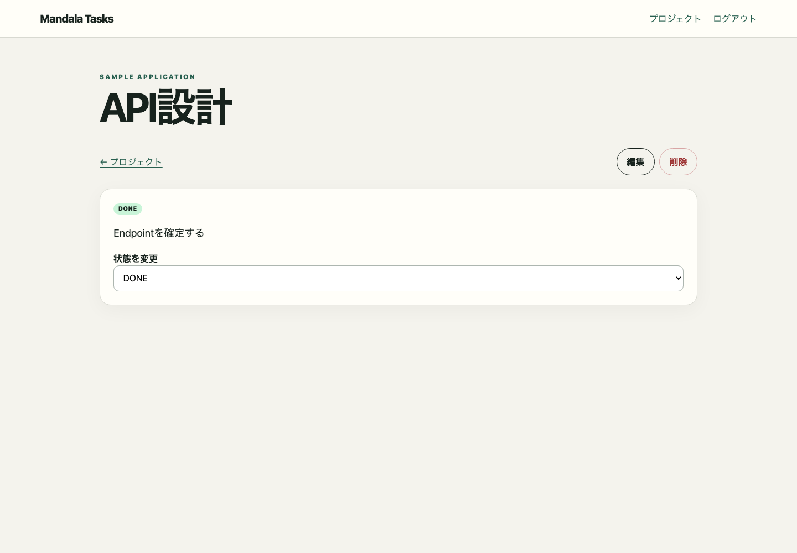

public.projects
table:public.projectsflow:task.status.changeObserved E2E flow from /tasks/{id} to /tasks/{id} in success state


table:public.projectstable:public.audit_logstable:public.tasks| Column | Key | データ型 |
|---|---|---|
| id | PK | bigint |
| project_id | FK | bigint |
| assignee_id | FK | bigint |
[{kind=select, label=状態を変更, value=DONE}]2026-01-15T03:00:00.000Z/tasks/{id}[{method=GET, mockId=task-status-change:0, path=/api/tasks/{id}, requestBody=null, responseBody={assigneeId=1, createdAt=2026-01-10T00:00:00Z, description=Endpointを確定する, id=10, projectId=1, status=IN_PROGRESS, title=API設計, updatedAt=2026-01-14T00:00:00Z}, status=200, undefined=false}, {actionSequence=0, method=PATCH, mockId=task-status-change:1, path=/api/tasks/{id}/status, requestBody={status=DONE}, responseBody={assigneeId=1, createdAt=2026-01-10T00:00:00Z, description=Endpointを確定する, id=10, projectId=1, status=DONE, title=API設計, updatedAt=2026-01-15T03:00:00Z}, status=200, undefined=false}, {actionSequence=0, method=GET, mockId=task-status-change:2, path=/api/tasks/{id}, requestBody=null, responseBody={assigneeId=1, createdAt=2026-01-10T00:00:00Z, description=Endpointを確定する, id=10, projectId=1, status=DONE, title=API設計, updatedAt=2026-01-15T03:00:00Z}, status=200, undefined=false}]/tasks/{id}task-status-change982f285fbba5d40b0082919a493ef8980e9b8eb414c63b4251d121694eb93d03success[{action={kind=select, label=状態を変更, value=DONE}, condition={featureFlags={}, outcome=success, role=ADMIN, scenarioOutcome=success}, from={name=API設計, route=/tasks/{id}, screenshot=mandala/generated/sample-app/screenshots/task-status-change-step-0.png, state=normal}, relatedHttp=[{method=PATCH, mockId=task-status-change:1, path=/api/tasks/{id}/status, status=200, undefined=false}, {method=GET, mockId=task-status-change:2, path=/api/tasks/{id}, status=200, undefined=false}], sequence=0, to={name=API設計, route=/tasks/{id}, screenshot=mandala/generated/sample-app/screenshots/task-status-change.png, state=success}}]{}
mandala/snapshots/ui/task-status-change.json